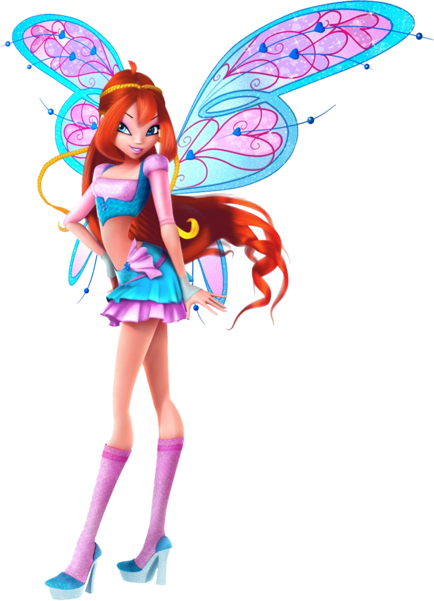
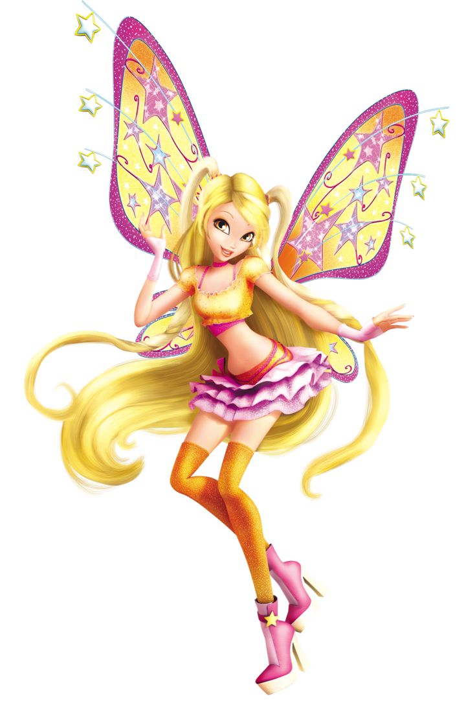
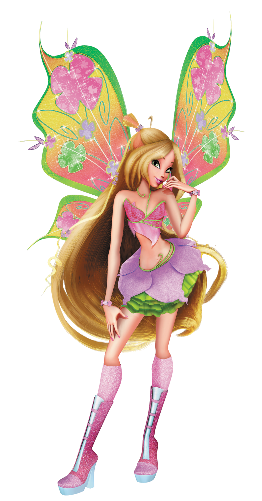
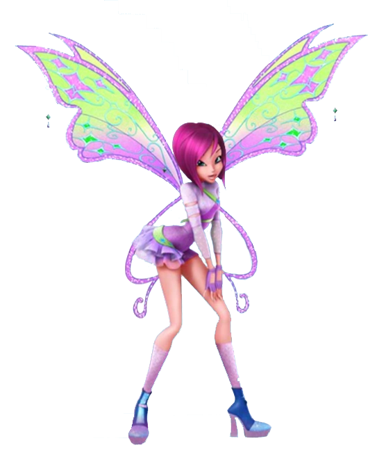
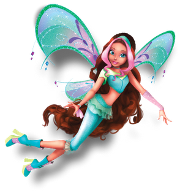

-
Bloom Feitiços
- Ataques
- Defesas
Flecha de Fogo, Coração de Dragão, Supernova, Força da Vida
Armadura Flamejante, Asa de Dragão
Bloom Peters é uma das fadas do Clube Winx e a fundadora do grupo. É a princesa do planeta Domino. Também é a principal da série.
-
Stella Feitiços
- Ataques
- Defesas
Tempestade Solar, Dança do Sol, Universo de Luz, Gota de Luz
Escudo de Sirius, Duplo Eclipse
Stella é uma das fadas do Clube Winx. Ela é a melhor amiga de Bloom. É a princesa do planeta Solária e a guardiã do anel: espada do poder.
-
Flora Feitiços
- Ataques
- Defesas
Vento de Outono, Trovoada de Verão, Vinhas Construtoras, Sopro do Mundo
Anél de Primavera, Rosa de Inverno
Flora Fernández é uma das fadas do Clube Winx. É a fada guardiã da natureza.
-
Musa Feitiços

- Ataques
- Defesas
Ataque Harmónico, Explosão Estéreo, Poder da Harmonia, Coração Brilhante
Barreira Sónica, Eco Mágico
Musa Kimura é uma das fadas do Clube Winx. Ela é a fada da música.
-
Tecna Feitiços
- Ataques
- Defesas
Megawatt, Tecno Shock, Explosão Tecno, Joia da Mente
Placa Defensiva, Superprisma
Tecna é uma das fadas do Clube Winx. Ela é a fada da tecnologia.
-
Aisha Feitiços
- Ataques
- Defesas
Onda Morphix, Furação Andros, Super Onda Morphix, Espírito de Coragem
Parede de Plasma, Barreira (Morphix)
Layla Pelay é uma das fadas do Clube Winx, e é a nova fada da temporada 2. É a princesa do planeta Andros.